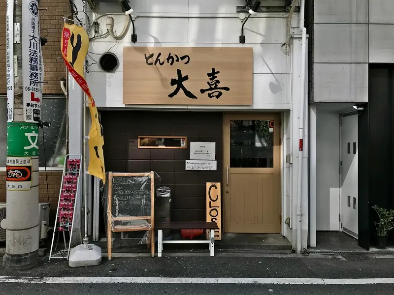

鹿児島県産の豚を、低温でじっくり揚げる。
東心斎橋のとんかつ専門店「大喜」の一枚は、ここから始まります。
作り置きはしません。豚・油・塩・米、ひとつひとつに理由のあるとんかつです。
注文を受けてからスジ切り・パン粉付けを行い、低温でじっくり揚げます。断面はほんのりピンクでジューシー。揚げ上がりまで20〜30分ほどかかる、本気の一枚です。
厳選された鹿児島県産の豚を使用。合わせる塩は約20種が定期的に入れ替わります。まずは塩で、肉そのものの甘みを味わうのがおすすめです。
ご飯はキヌヒカリとコシヒカリをブレンドした、とんかつに合うこだわりの一杯。3杯までおかわり無料、キャベツもおかわり自由です（口コミ情報）。
部位とグラムが選べる定食が中心です。定食にはご飯・味噌汁・キャベツ・漬物が付きます。
ロースは脂身の多め・少なめ、グラム数も選べます。品目は季節や仕入れで変わる場合があります。
平日のランチタイムには、お得なサービスランチがあります。内容と価格は当日の店頭メニューでご確認ください。
小さな専門店ならではの決まりごとをまとめました。
来店順のご案内です。満席のときは入れ替え制のため、時間帯によりお待ちいただく場合があります。開店直後（11:00／17:30）の来店がおすすめです。
注文を受けてから揚げるため、厚みによっては30分ほどかかります。お時間に余裕を持ってお越しください。
カード・電子マネーは使えません。現金のご用意をお願いします。
口コミで勧められる食べ方です。そのまま→岩塩→ソース→辛子の順で、味の違いを楽しめます。キャベツには胡麻と紫蘇、2種のドレッシングを。
